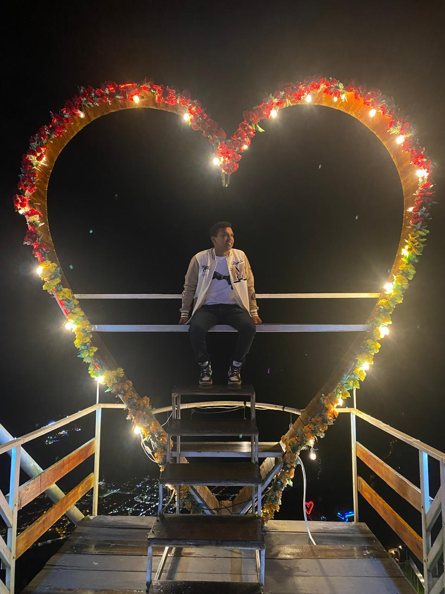
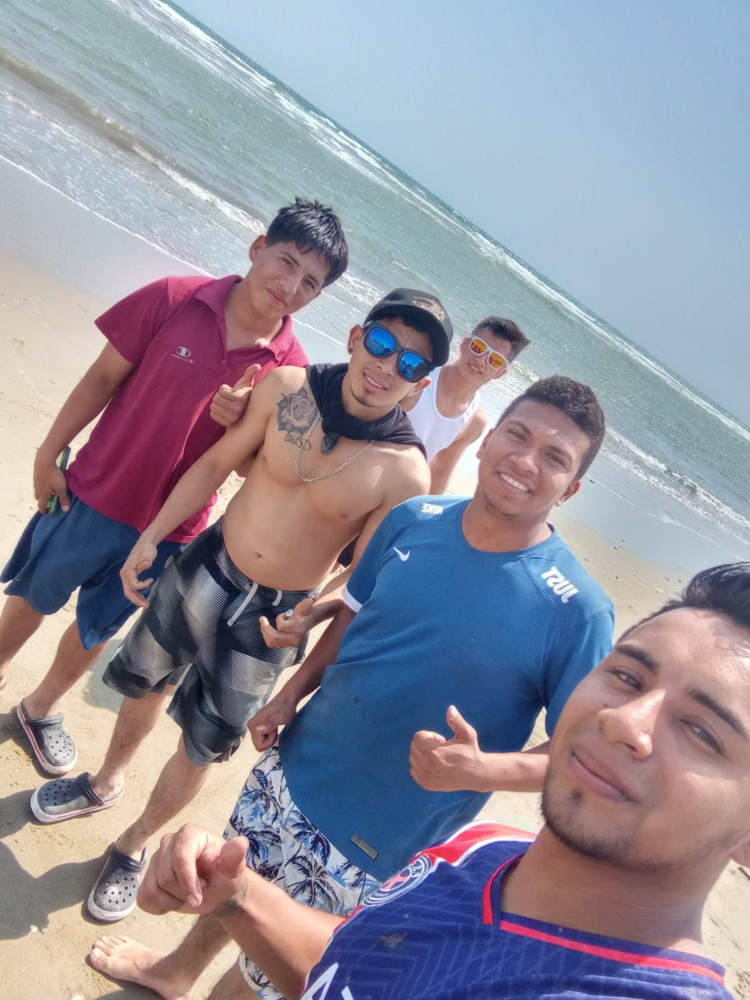
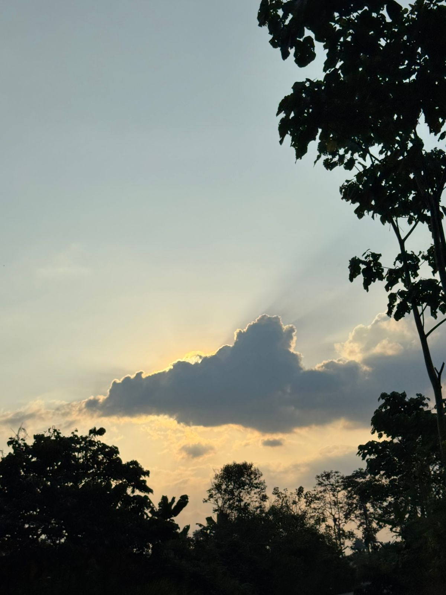
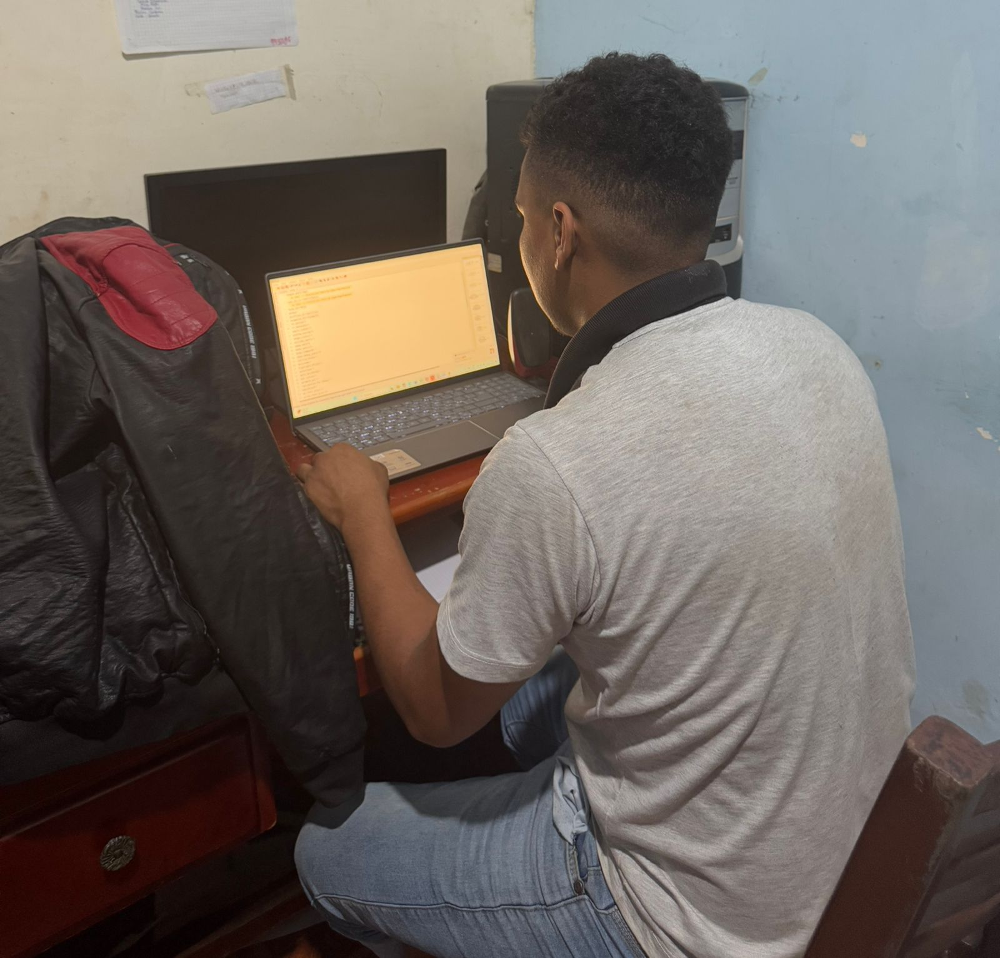

Sobre mí
Soy Henry Santos, tengo 20 años y vivo en Santo Domingo, actualmente estudio en la carrera de Tecnologias de la Información, soy un estudiante apasionado por la tecnología y el desarrollo web, me llamo mucho esta carrera ya que es impresionante como la tecnología avanza a medida que pasan los años. La tecnologia es muy importante para la vida cotidiana ya que gracias a ello puedo comunicarme con mi familia lejana y poder estudiar lo que mas me apasiona. Este blog es mi espacio para compartir un poco de mi vida y saber a que me dedico aparte de estudiar.
Trabajo en una finca de cacao y verdes. Mi padre ha exportado el producto por mas de 20 años al kilometro 13 de la Concordia, realizamos cargas un dia a la semana. Los horarios de trabajo empiezas desde las 7am hasta las 4pm, en ocaciones nos quedamos hasta que termine la carga de caminones.
En mi tiempo libre me gusta salir con mis amigos a la playa, disfruto mucho con ellos ya que son mu divertidos. No soy mucho de guardar recuerdos o momentos en mi celular ya que me gusta tener todo eso reservado solo para mi.
En mi recidencia son dias hermosos ya que se pueden apreciar atareceres, los dias son maravillosos ya uqe contemplar vistas y paisajes me motivan a continuar con mis labores.
Mis Intereses
Además del desarrollo tecnológico, me apasionan los programar, la lectura y la música. Creo firmemente en la importancia del equilibrio entre trabajo y vida personal.
